Алгебра логики
Логика очень древняя наука. Ещё в античные времена была известна формальная логика, позволяющая делать заключения о правильности какого-либо суждения не по его фактическому содержанию, а только по форме его построения. Например, уже в древности был известен закон исключения третьего. Его содержательная трактовка была такова: «Во время своих странствований Платон был в Египте ИЛИ не был Платон в Египте». В такой форме это или любое другое выражение будут правильны (тогда говорили: истинно). Ничего другого быть не может: Платон либо был, либо не был в Египте - третьего не дано. Другой закон логики - закон непротиворечивости. Если сказать: «Во время своих странствий Платон был в Египте И не был Платон в Египте», то очевидно, любое высказывание, имеющее такую форму, всегда будет ложно. Если из теории следуют два противоречащих друг другу вывода, то такая теория безусловно неправильная (ложная) и должна быть отвергнута. Ещё один закон, известный в древности - закон отрицания: «Если НЕверно, что Платон НЕ был в Египте, то значит, Платон был в Египте». Формальная логика основана на “высказываниях”. “Высказывание” - это основной элемент логики, определяемый как повествовательное предложение, относительно которого можно однозначно сказать, истинное или ложное утверждение оно содержит. Например: Листва на деревьях опадает осенью. Земля прямоугольная. Первое высказывание содержит истинную информацию, а второе - ложную. Вопросительное, побудительное и восклицательное предложения не являются высказываниями, так как в них ничего не утверждается и не отрицается. Пример предложений, не являющихся высказываниями: Не пейте сырую воду! Кто не хочет быть счастливым? Высказывания могут быть и такими: 2>1, Н2О+SO3=H2SO4. Здесь используются языки математических символов и химических формул. Приведённые выше примеры высказываний являются простыми. Но из простых высказываний можно получить сложные, объединив их с помощью логических связок. Логические связки - это слова, которые подразумевают определённые логические связи между высказываниями. Основные логические связки издавна употребляются не только в научном языке, но и в обыденном, - это “и”, “или”, “не”, “если ... то”, “либо ... либо” и другие известные нам из русского языка связки. В рассмотренных нами трёх законах формальной логики использовались связки “и”, “или”, “не”, “если ... то” для связи простых высказываний в сложные. Высказывания бывают общими, частными и единичными. Общее высказывание начинается со слов: всё, все, всякий, каждый, ни один.Частное высказывание начинается со слов: некоторые, большинство и т.п. Во всех других случаях высказывание является единичным. Формальная логика была известна в средневековой Европе, она развивалась и обогащалась новыми законами и правилами, но при этом вплоть до 19 века она
Логическая операция ИЛИ.
Логическую функцию принято задавать в виде таблицы. В левой части этой таблицы перечисляются все возможные значения аргументов функции, т.е. входные величины, а в правой указывается соответствующее им значение логической функции. Для элементарных функций получается таблица истинности данной логической операции. Для операции ИЛИ таблица истинности имеет вид:
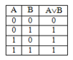Логическая операция И
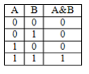Из таблицы истинности следует, что операция И - это логическое умножение, которое ничем не отличается от традиционно известного умножения в обычной алгебре. Операцию И можно обозначить знаком по-разному:
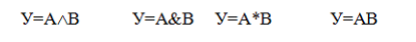В формальной логике операции логического умножения соответствуют связки и, а, но, хотя
Логическая операция НЕ
Эта операция является специфичной для алгебры логики и не имеет аналога в обычной алгебре. Она обозначается чертой над значением переменной, либо знаком приставки перед значением переменной:
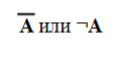Читается в обоих случаях одинаково «Не А». Таблица истинности для этой функции имеет вид:
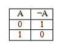В вычислительной технике операцию НЕ называют отрицанием или инверсией, операцию ИЛИ - дизъюнкцией, операцию И - конъюнкцией. Набор логических функций “И”, “ИЛИ”, “НЕ” является функционально полным набором или базисом алгебры логики. С помощью него можно выразить любые другие логические функции, например операции “строгой дизъюнкции”, “импликации” и “эквивалентности” и др. Рассмотрим некоторые из них. Логическая операция “строгая дизъюнкция”. Этой логической операции соответствует логическая связка “либо ... либо”. Таблица истинности для этой функции имеет вид:
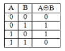Операция “строгая дизъюнкция” выражается через логические функции “И”, “ИЛИ”, “НЕ” любой из двух логических формул:
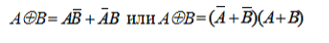и иначе называется операцией неравнозначности или “сложения по модулю 2”, так как при сложении чётного количества единиц, результатом будет “0”, а при сложении нечётного числа единиц, результат станет равен “1”.
Логическая операция “импликация”.
Выражение, начинающееся со слов если, когда, коль скоро и продолжающееся словами то, тогда,называется условным высказыванием или операцией «импликация». Таблица истинности для этой функции имеет вид:
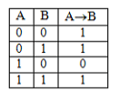Операцию “импликация” можно обозначить по-разному:
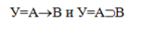Эти выражения эквивалентны и читаются одинаково: «Игрек равен импликации от А и В». Операция “импликация” выражается через логические функции “ИЛИ”, “НЕ” в виде логической формулы
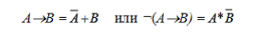Логическая операция “эквивалентность” (равнозначность)
Этой логической операции соответствуют логические связки “если и только если”, «тогда и только тогда, когда». Таблица истинности для этой функции имеет вид:
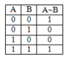Операция “эквивалентность” обозначается по-разному. Выражения
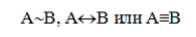С помощью алгебры логики можно очень кратко записать законы формальной логики и дать им математически строгое доказательство.
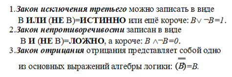В алгебре логики, как в элементарной, справедливы переместительный(закон коммутативности), сочетательный (закон ассоциативности) и распределительный (закон дистрибутивности) законы, а также аксиома идемпотентности (отсутствие степеней и коэффициэнтов) и др., в записях которых используются логические переменные, принимающие только два значения - логический ноль и логическая единица. Применение этих законов позволяет производить упрощение логических функций, т.е. находить для них выражения, имеющие наиболее простую форму. Основные аксиомы и законы алгебры логики приведены в таблице:
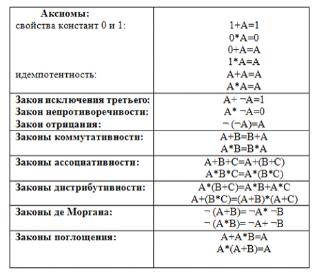